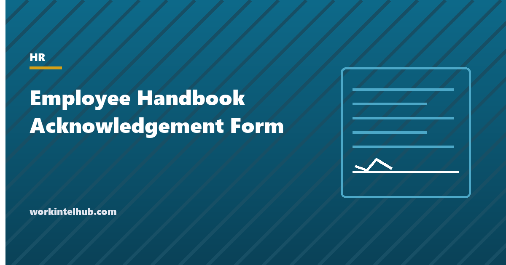

Employee Handbook Acknowledgement Form

An employee handbook acknowledgement is the signed page that says an employee received the handbook and understands they are expected to read it. It is one page, it is collected at hire and whenever the handbook changes, and it is the document the employer produces, years later, when an employee says they never knew about the policy they are being disciplined under. It is also the place where two legal statements live: that the handbook is not a contract, and that employment is at will. Neither statement works if it is only in the handbook; both work when the employee has signed under them.
The generator below writes the form for at-will states, Montana and contract or union employees, with electronic or paper signature. The rest of the page covers what the signature proves and what it does not, the clauses that have to be there, the ones that must not be, and what to do when someone refuses to sign.
Handbook acknowledgement form generator
Nothing typed here leaves your browser. The form acknowledges receipt and the duty to read; it does not say the employee agrees with the handbook, and it preserves the rights the law protects.
What the signature proves, and what it does not
| The signature proves | The signature does not prove |
|---|---|
| The employee received the handbook, or access to it, on a date | The employee read it |
| The employee was told employment is at will and the handbook is not a contract | The employee agrees with any policy |
| The employee was told where the current version lives and that it can change | That a later version was received, unless re-acknowledged |
| The employee was told which version applied at the time | Anything about policies added after that version |
The first row is the practical value. In a dispute over an attendance write-up, a termination for violating a policy, or an arbitration clause, the acknowledgement is the evidence that the employee had notice. The second row is why the form should never say "I have read and agree to": it invites the argument that the employee did not, and it turns a notice document into something that looks like a contract, which undoes the not-a-contract clause. "I have received and understand I am expected to read" is the formulation that survives. The handbook guide covers what the handbook itself should contain.
The clauses that have to be there, and the ones that must not
- Not a contract. Courts in many states have held that handbook language ("employees will only be dismissed for cause", progressive discipline steps described as mandatory) can create an implied contract. A clear disclaimer, in the handbook and on the signed page, is the defence.
- At will, and who can change it. The statement that either side may end employment at any time, with the addition that only a named officer can alter it in a signed writing. The second half prevents a manager's assurance ("you have a job here as long as you want it") from becoming a contract.
- Montana is different. Its Wrongful Discharge from Employment Act requires good cause after probation, so the at-will clause is replaced by a probation and good-cause statement; the generator does this.
- The right to change the handbook, with a commitment to tell people about significant changes.
- The rights carve-out. Since the NLRB's 2023 Stericycle decision, a handbook rule that employees could reasonably read as restricting their right to discuss wages and working conditions is presumptively unlawful, and an acknowledgement that binds employees to the handbook without a carve-out makes the problem worse. The clause is one sentence and the generator includes it.
- Not: "I agree to be bound by". See above.
- Not: a non-compete, arbitration agreement or confidentiality agreement buried in the acknowledgement. Each of those needs its own document, its own consideration and in many states its own notice period; folding them into a handbook acknowledgement is the fastest way to make them unenforceable.
Collecting it, updating it, and refusals
At hire, the form is part of the new hire paperwork, returned within a few days, and filed in the personnel record with the version number. On updates, a new acknowledgement is collected whenever a policy that matters changes (attendance, discipline, monitoring, leave, pay practices); minor edits can be notified without re-signing. Electronic signatures are valid under the federal E-SIGN Act and state equivalents; the HR system's audit trail (who, when, from where, which document version) is the record, and it should be exportable.
Refusals are rarer than feared and easy to handle. The employee is told that the signature acknowledges receipt, not agreement, and that disagreements can be raised through the grievance procedure. If they still decline, HR notes on the form that the handbook was provided on the date, that the employee declined to sign, and who witnessed it, and files it. The policies apply regardless; the note proves notice as well as a signature would. Disciplining someone for refusing to sign is unnecessary and, where the refusal is framed as a protest about working conditions, risky.
Key takeaways
- The acknowledgement proves receipt and notice on a date; it does not prove the employee read or agreed. Write it as 'received and expected to read', never 'read and agree'.
- It must carry the not-a-contract clause, the at-will clause with a named officer who alone can change it (Montana uses a good-cause statement instead), the right to change the handbook, and a carve-out for legally protected rights.
- Never fold a non-compete, arbitration or confidentiality agreement into it; each needs its own document.
- Collect at hire and on significant policy changes, file with the version number; electronic signatures with an audit trail are valid.
- A refusal is recorded with a witnessed note that the handbook was provided; the policies apply anyway.
Frequently asked questions
What is an employee handbook acknowledgement form?
A one-page form the employee signs to confirm they received the handbook, or access to it, on a date and understand they are expected to read it. It carries the statements that the handbook is not a contract and that employment is at will, and it is filed in the personnel record as evidence of notice.
What should the acknowledgement say?
That the employee received the handbook and its version; that they are expected to read it and ask questions; that it is not a contract; that employment is at will and only a named officer can change that in writing (or, in Montana, the probation and good-cause statement); that the company may change the handbook; that nothing limits the employee's legal rights, including discussing working conditions; and that the signature confirms receipt, not agreement. The generator on this page produces it.
Is a signed handbook acknowledgement a contract?
No, and it should say so. Its purpose is to prove notice. Forms that say 'I agree to be bound by the handbook' blur the line and can undermine the not-a-contract disclaimer; the formulation that works is 'I have received and understand I am expected to read'.
What if an employee refuses to sign the handbook acknowledgement?
Explain that the signature confirms receipt, not agreement, and that policy concerns can go through the grievance procedure. If they still decline, HR writes on the form that the handbook was provided on the date, that the employee declined to sign, and who witnessed it, and files it. The policies apply regardless. Discipline for refusing is unnecessary and can be risky.
Do employees need to sign again when the handbook changes?
For significant policy changes (attendance, discipline, monitoring, leave, pay practices), yes: a new acknowledgement with the new version number. Minor edits can be notified without re-signing. Keep each signed version; the question in a dispute is always which version the employee had notice of.
Are electronic signatures valid for handbook acknowledgements?
Yes, under the federal E-SIGN Act and state electronic transactions laws. The HR system's audit trail, recording who signed, when, from where and which document version, is the record, and it should be exportable in case it is needed years later.